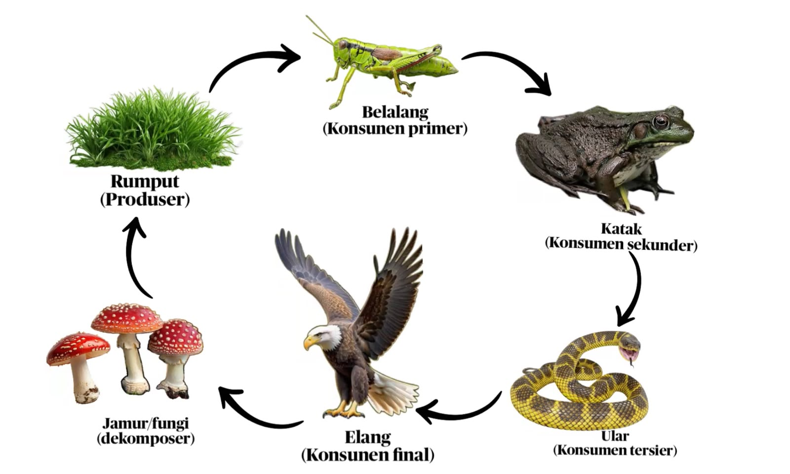

Mengenal hubungan makan dan dimakan antarorganisme yang menjaga keseimbangan ekosistem di lingkungan lahan basah.
Setiap organisme di lahan basah memiliki peran penting dalam mengalirkan energi dari produsen hingga konsumen puncak.
Organisme seperti rumput dan tumbuhan air yang dapat membuat makanannya sendiri melalui proses fotosintesis dengan bantuan sinar matahari.
Organisme yang mendapatkan energi dengan memakan makhluk hidup lain. Terdiri dari konsumen primer (belalang), konsumen sekunder (katak), konsumen tersier (ular), hingga konsumen final/puncak (elang).
Organisme seperti jamur/fungi yang menguraikan sisa-sisa tumbuhan dan hewan mati menjadi zat hara untuk menyuburkan tanah dan kembali dimanfaatkan oleh produsen.
Proses perpindahan energi makanan berlangsung secara berurutan dan berputar dalam ekosistem. Tumbuhan menghasilkan energi yang dimanfaatkan oleh hewan pemakan tumbuhan, hingga dimangsa oleh predator utama sebelum diuraikan kembali ke tanah.

Jika salah satu komponen dalam siklus ini terganggu atau punah, maka keseimbangan seluruh ekosistem lahan basah akan terancam.
Menghasilkan energi pertama bagi lingkungan.
Memakan rumput sebagai sumber energi utama.
Predator yang memangsa serangga dan hewan kecil di lahan basah.
Predator puncak dan pengurai yang mengembalikan nutrisi ke dalam tanah.
Menjaga setiap tingkatan organisme agar ekosistem lahan basah tetap lestari.
Mencegah terjadinya ledakan populasi salah satu jenis hewan maupun tumbuhan di lingkungan lahan basah.
Memastikan aliran nutrisi dan energi berjalan dengan lancar dari lingkungan abiotik ke organisme hidup.
Rantai makanan yang berfungsi dengan baik menjadi indikator bahwa lingkungan lahan basah dalam kondisi sehat dan alami.